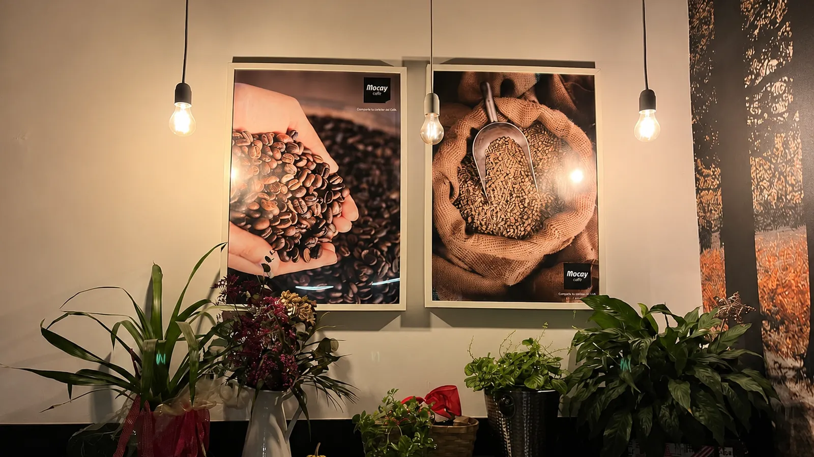

Dirección
Iturlandeta Karrika, 6
31780 Bera (Navarra)

Estamos en el centro del pueblo, con la cafetera siempre lista. Aquí tienes cómo llegar, el horario y todas las formas de contactarnos.
Llámanos, escríbenos o pásate sin más. Para reservas de grupo o meriendas grandes, mejor un toque por teléfono.
Iturlandeta Karrika, 6
31780 Bera (Navarra)
Para pedidos, dudas y reservas de grupo.
948 62 56 73Escríbenos para dudas o reservas de grupo.
Abrir WhatsAppA un paso de la plaza, en el valle del Bidasoa. Llegues de Lesaka, Etxalar, Igantzi o desde la frontera con Francia, estamos de camino.
 Ver mapa
Ver mapa
Pulsa para cargar el mapa de Google. Así la página vuela y solo cargas el mapa cuando lo necesitas.
Bera está muy bien comunicada, entre San Sebastián, Pamplona y la frontera con Francia. Te dejamos algunas pistas.
Desde Pamplona o San Sebastián se llega por la N-121-A siguiendo el Bidasoa. Desde Francia, cruzando por Ibardin o Lizuniaga. Una vez en el pueblo, estamos en el centro, junto a la zona de la plaza.
Hay aparcamiento en las calles cercanas y en las zonas habilitadas del pueblo. Deja el coche a un paso y acércate andando: el centro de Bera se recorre en un momento.
Estamos en Iturlandeta Karrika, en pleno centro, junto a las casas de piedra y a un paseo de la iglesia de San Esteban y la casa Itzea. Si bajas de Larun, te pilla de camino.
Déjanos un mensaje y te contestamos pronto. Para reservas de grupo o meriendas, lo más rápido es llamarnos al 948 62 56 73.
El café está recién hecho y la mesa, libre. Ven cuando quieras, sin prisa.